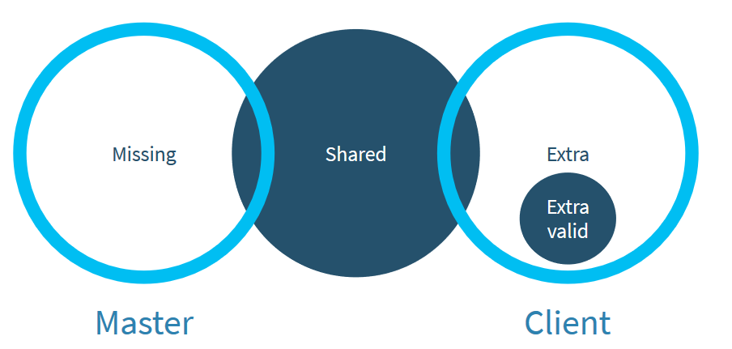

Distributing your app like a pro with Asyncio
Marta Gómez
About me
- Happy developer at Wazuh.
- Organizer at Geek & Tech Girls.
- Python .
Introducing the app
The app has two main elements:
- Wazuh Manager: analyzes and reports events from agents.
- Wazuh Agent: Recollects events (such as logins, attacks, etc) and sends them to the manager.
Scalability problem
- The more agents we connect to the manager, the more load of events it has to analyze.
- There will be a moment when we won't be able to connect more agents.
High availability
- Protection against outages and downtime.
- Service / Hardware failure.
Distributing the app
- Network topology.
- Communication protocol.
- File integrity.
- Performance.
Network topology

- Defines how nodes connect with each other.
- The more connections, the more time it will take the cluster to synchronize.
- We chose a network topology with hierarchy: we have master and client nodes.
Communication protocol
- Defines how nodes communicate with each other.
- Asynchronous protocols: always reply when receiving the message. Don't wait for a result.
File integrity
Performance
- The server must be always available to process requests from any node.
- Use threads to process high load requests.
- Take advantage of the asynchronous magic.
- Use profilers to know your bottlenecks.
Asyncio
- Python 3.4 > module to program asynchronously.
- It has a submodule called Protocol which we can inherit from.
- It also has asynchronous Coroutines or Tasks.
File structure
- Common: Defines common methods for both server and clients (send, build, parse, common requests...).
- Server: Defines server's behaviour.
- Client: Defines client's behaviour.
Message structure
- Header (18 bytes):
- Message size (4 bytes).
- Message ID/counter (4 bytes).
- Protocol command (10 bytes).
- Payload.